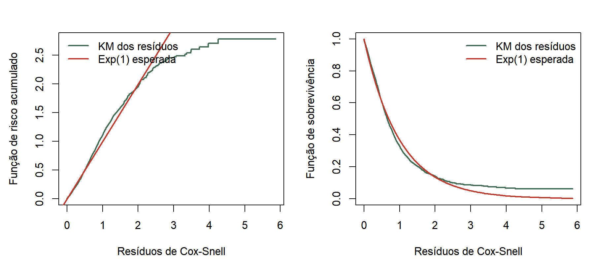
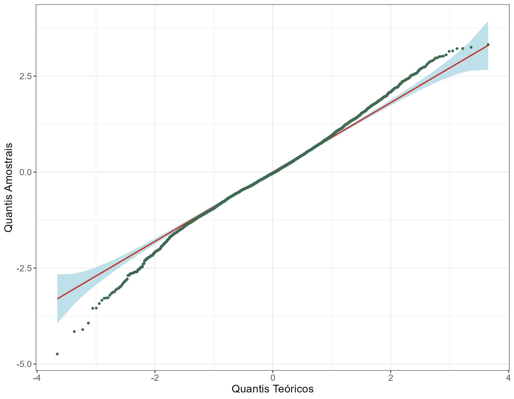
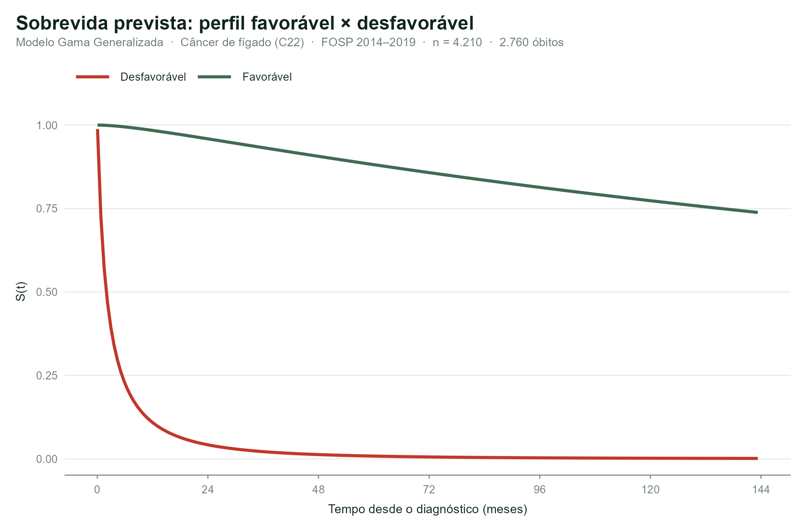

Análise de Sobrevivência
Câncer de Fígado
Parte II: Modelos Paramétricos
Caio Salviano · caiosalviano@id.uff.br
Universidade Federal Fluminense
16/11/2026
1 Introdução
1.1 Retomada da Parte I
O que a Parte I estabeleceu
👥 Pacientes
4.231
C22 · FOSP · 2014–2019
💀 Óbitos por câncer
2.774
65,6% · evento de interesse
⏱️ Mediana global
13,9
meses de sobrevida
🚫 Censuras
1.457
34,4% · sem óbito por câncer
Por que uma Parte II?
Parte I
Análise univariada e não paramétrica: estadiamento, escolaridade e cirurgia separaram as curvas.
Limite
Cada fator foi avaliado isoladamente; os efeitos se sobrepõem e não foram separados entre si.
Pergunta da Parte II
Qual distribuição descreve o tempo até o óbito e quais covariáveis continuam importantes quando analisadas em conjunto?
1.2 Objetivo e Roteiro
I
Sem covariáveis
Qual distribuição descreve o tempo até o óbito por câncer de fígado?
ExponencialWeibullLog-normalGamaGama Generalizada
Escolha por gráficos, AIC/BIC e Teste da Razão de Verossimilhanças
II
Com covariáveis
Quais fatores permanecem no modelo e quanto mudam o tempo de sobrevida?
Seleção de variáveisDiagnósticoRazão de tempos medianos
Interpretação em termos de tempo mediano de sobrevida
1.3 Base Analítica da Parte II
População de análise
👥 n analítico
4.210
mesma amostra em todos os ajustes
💀 Óbitos por câncer
2.760
65,6% · evento de interesse
🚫 Censuras
1.450
34,4% · sem óbito por câncer
⏱️ Mediana (KM)
14
meses de sobrevida
Decisões de base
Tempo = 0
Removidos 21 pacientes com tempo de seguimento igual a zero (14 óbitos e 7 censuras).
Dados ausentes
“Sem informação” (ESCOLARI/ECGRUP) e “Não se aplica” (ECGRUP) mantidos como categorias próprias, preservando o n.
Sensibilidade
Reajuste em casos completos ao final, para verificar a estabilidade das conclusões.
2 Metodologia
2.1 Etapa I · Escolha da Distribuição
Modelos ajustados
1
dist = “exponential” Exponencial
2
dist = “weibull” Weibull
3
dist = “lnorm” Log-normal
4
dist = “gamma” Gama
5
dist = “gengamma” Gama Generalizada
Todos ajustados com flexsurvreg()
Critérios de escolha
Kaplan-Meier × modelo · pontos próximos da diagonal indicam bom ajuste
Linearização · reta indica adequação (Exponencial, Weibull, Log-normal)
AIC e BIC · menor valor, ajuste penalizado pela complexidade
TRV · cada modelo contra a Gama Generalizada (modelos aninhados)
A decisão combina os quatro critérios; em caso de dúvida, o modelo mais simples
2.2 Etapa II · Seleção de Variáveis
Os 5 passos de seleção · TRV a 10%
Passo 1
Uma a uma contra o modelo nulo
▶
Passo 2
Modelo múltiplo, retirando uma por vez
▶
Passo 3
Reentrada das descartadas
▶
Passo 4
Reavaliação das excluídas no passo 1
▶
Passo 5
Interações (até duas)
Antes do passo 1
Filtro: p < 0,25 no Log-Rank ou no Peto-Peto
Candidatas: 6, com justificativa clínica
Ajuste inicial: Gama Generalizada, depois trocada pela distribuição escolhida
Mesma amostra em todos os modelos comparados
Regra de decisão
TRV com p < 0,10 mantém a variável
AIC / BIC como apoio; o BIC prioriza a parcimônia
Magnitude do efeito (RTM) e relevância prática: com amostra grande, p pequeno aparece mesmo com efeito pequeno
2.3 Etapa II · Avaliação e Interpretação
Distribuição final
Mesmos critérios da Etapa I, agora com covariáveis
\(AIC</span> <span class="fn">\)BIC TRV
Diagnóstico
Cox-Snell · risco acumulado dos resíduos sobre a reta
Quantílico aleatorizado · qq-plot com banda de confiança
Interpretação
RTM · razão de tempos medianos, com IC95%
Exponencial e Gama usam exp(-coef); as demais exp(coef)
IDADE reportada por 10 anos
3 Resultados
3.1 Etapa I · Kaplan-Meier × Modelos

3.2 Etapa I · Linearização

3.3 Etapa I · AIC e BIC
Critérios de informação
ModeloAICBIC
Exponencial25.344,725.351,0
Weibull23.942,723.955,3
Log-normal23.510,923.523,6
Gama24.182,524.195,1
Gama Generalizada23.469,423.488,5
Menor AIC e menor BIC: Gama Generalizada

3.4 Etapa I · Teste da Razão de Verossimilhanças
Cada modelo contra a Gama Generalizada
ComparaçãoTRVglp-valorDecisão
Exponencial × GG1.879,242< 0,001rejeitado
Weibull × GG475,211< 0,001rejeitado
Log-normal × GG43,441< 0,001rejeitado
Gama × GG715,011< 0,001rejeitado
Com n = 4.210, o TRV detecta até desvios pequenos: todos os modelos simples são rejeitados. A log-normal é a mais próxima (TRV = 43,4), mas ainda inadequada → mantém-se a Gama Generalizada.
3.5 Etapa I · Distribuição Escolhida
Evidências
1
KM × modelo: Gama Generalizada é a que mais se aproxima da diagonal; exponencial é a que mais desvia.
2
Linearização: exponencial claramente fora da reta; Weibull e log-normal mais próximas, porém com desvios nas caudas.
3
AIC / BIC: menores valores para a Gama Generalizada.
4
TRV: todos os modelos simples rejeitados (p < 0,001).
Distribuição escolhida
Gama Generalizada
Q = −0,42 (IC95% −0,54 a −0,29) · forma de risco flexível, não constante; engloba as demais distribuições como casos particulares. Mortalidade concentrada nos primeiros meses após o diagnóstico.
3.6 Etapa II · Covariáveis Candidatas
VariávelJustificativa clínicaLog-RankPeto-Peto
ECGRUPExtensão da doença no diagnóstico; maior separador na Parte I< 0,001< 0,001
CIRURGIAÚnico tratamento potencialmente curativo< 0,001< 0,001
QUIMIOTratamento sistêmico; curvas se cruzam na Parte I< 0,001< 0,001
ESCOLARIMarcador de acesso a diagnóstico e cuidado< 0,001< 0,001
SEXODiferença modesta na Parte I0,0460,049
IDADEQuantitativa; entra por justificativa clínica (por 10 anos)——
Não candidatas: RADIO (188 tratados, 4,4%) e CATEATEND (Particular com 75 casos), por justificativa clínica. “Sem informação”/“Não se aplica” mantidos como categorias. Todas as candidatas passam no filtro de 0,25.
3.7 Etapa II · Passos 1 e 2
Passo 1 · uma variável por vez
Variávelp (TRV)Decisão
ECGRUP< 0,001entra
CIRURGIA< 0,001entra
QUIMIO< 0,001entra
ESCOLARI< 0,001entra
SEXO0,113não entra
IDADE10< 0,001entra
Passo 2 · modelo múltiplo
Variável retiradap (TRV)Decisão
ECGRUP< 0,001fica
CIRURGIA< 0,001fica
QUIMIO< 0,001fica
ESCOLARI< 0,001fica
IDADE100,042fica
Nenhuma variável sai no passo 2.
3.8 Etapa II · Passos 3 a 5
Passos 3 e 4 · reentrada e reavaliação
Passo 3 — reentrada das descartadas: nada a reentrar (nenhuma variável saiu no passo 2).
Passo 4 — reavaliação das excluídas no passo 1: SEXO com p (TRV) = 0,914 → não entra. O efeito marginal do sexo desaparece após ajuste.
Passo 5 · interações (até duas)
ECGRUP × CIRURGIA · cirurgia em 49% no estágio I e 11% no IV
TRV = 27,52 (gl 5) · p < 0,001 → entra
ECGRUP × QUIMIO · quimioterapia em 27% nos estágios I/II e 47% no IV
TRV = 93,18 (gl 5) · p < 0,001 → entra
3.9 Etapa II · Modelo Selecionado
Permaneceram
ECGRUP — principal fator prognóstico
CIRURGIA — tratamento curativo
QUIMIO — efeito depende do estágio
ESCOLARI — acesso a cuidado
IDADE10 — limítrofe (p = 0,064), mantida pelo protocolo a 10%
Saíram
SEXO — passo 1 (p = 0,113); não reentrou no passo 4 (p = 0,914)
RADIO / CATEATEND — fora por justificativa clínica
Interações
ECGRUP × CIRURGIA (p < 0,001)
ECGRUP × QUIMIO (p < 0,001)
26 parâmetros · Gama Generalizada
3.10 Etapa II · Reavaliação na Distribuição Final
Retirada de cada termo (hierarquia respeitada)
TermoTRVglp-valorΔAICΔBIC
ESCOLARI42,025< 0,001+32,0+0,3
IDADE103,4310,064+1,4−4,9
ECGRUP × CIRURGIA21,095< 0,001+11,1−20,6
ECGRUP × QUIMIO86,755< 0,001+76,8+45,0
ΔAIC/ΔBIC > 0: retirar o termo piora o ajuste. O BIC retiraria IDADE10 e ECGRUP×CIRURGIA, mas o TRV a 10% os mantém. Efeitos principais de ECGRUP, CIRURGIA e QUIMIO são protegidos pela hierarquia (não saem isoladamente).
3.11 Etapa II · Distribuição com Covariáveis
Modelo com as covariáveis selecionadas
ModeloAICBICp (TRV × GG)Decisão
Exponencial22.214,922.367,2< 0,001rejeitado
Weibull21.801,521.960,2< 0,001rejeitado
Log-normal21.500,621.659,20,0002rejeitado
Gama21.960,222.118,8< 0,001rejeitado
Gama Generalizada21.488,821.653,8—referência
A log-normal é a mais próxima (ΔAIC = 11,7; TRV = 13,7), mas rejeitada a 5%. Distribuição final: Gama Generalizada (Q = 0,17; IC95% 0,08–0,26), coerente com a Etapa I.
3.12 Etapa II · Diagnóstico
Resíduos de Cox-Snell

Resíduos quantílicos aleatorizados

Cox-Snell: a KM dos resíduos acompanha a referência Exp(1) (reta de 45° no risco acumulado), indicando adequação global; desvios na cauda direita refletem poucos pacientes em risco. Quantílicos: pontos dentro da banda, salvo eventuais desvios nas caudas. QUIMIO: as curvas se cruzam na Parte I — cautela com a hipótese de tempo acelerado; o efeito é lido por estágio (interação).
3.13 Etapa II · Razão de Tempos Medianos

Referência: Estágio I · sem cirurgia · sem quimio · Analfabeto. Com interações, os efeitos principais valem na categoria de referência da outra variável.
3.14 Etapa II · Interpretando as Interações
Cirurgia (vs não) por estágio
EstágioRTM combinada
I4,52
II5,12
III6,03
IV2,77
Benefício da cirurgia em todos os estágios, porém menor no IV.
Quimioterapia (vs não) por estágio
EstágioRTM combinada
I1,14
II1,27
III2,56
IV3,90
Sem efeito no estágio I; associação crescente nos estágios avançados.
RTM combinadas = produto dos efeitos (estimativas pontuais; IC requer a matriz de covariância). Demais efeitos: Estágio IV vs I = 0,05 (0,04–0,07) entre não tratados; Ensino superior vs Analfabeto = 1,90 (1,39–2,60); Idade (+10 anos) = 0,96 (0,92–1,00).
3.15 Etapa II · Perfis Previstos

Medianas previstas
Desfavorável
Estágio IV · sem cirurgia · sem quimio · Analfabeto · 70 anos → ≈ 2,0 meses (IC95% 1,5–2,6).
Favorável
Estágio I · cirurgia · quimio · Ensino superior · 56 anos → mediana não atingida no seguimento (modelo extrapola ≈ 384 meses).
Perfis extremos e ilustrativos; a mediana favorável é extrapolação além do acompanhamento — leitura apenas qualitativa do contraste.
3.16 Etapa II · Sensibilidade (casos completos)
Reajuste sem “Sem informação” / “Não se aplica”
TermoRTM principalRTM casos completosMesma direção
Estágio II0,500,52sim
Estágio III0,120,15sim
Estágio IV0,050,07sim
Cirurgia (Sim)4,524,36sim
Ensino superior1,901,37sim
Idade (+10 anos)0,960,94sim
Direção preservada em todos os 16 termos; magnitudes semelhantes (escolaridade superior atenua). Conclusões estáveis ao tratamento dos ausentes.
4 Conclusão
4.1 Conclusão
A distribuição Gama Generalizada descreveu melhor o tempo até o óbito, e estadiamento, cirurgia, quimioterapia (por estágio), escolaridade e idade permaneceram associadas à sobrevida quando analisadas em conjunto.
Distribuição
Gama Generalizada nas duas etapas (menor AIC/BIC; modelos simples rejeitados pelo TRV). Risco flexível, não constante; Q = 0,17 no modelo final.
Maiores efeitos
Estágio IV vs I (não tratados): RTM 0,05 (0,04–0,07) · −95%
Cirurgia no Estágio I: RTM 4,52 (3,23–6,32)
Ensino superior vs Analfabeto: RTM 1,90 (1,39–2,60)
QUIMIO no Estágio IV: ≈ 3,9 (combinada)
Limitações
— Estudo observacional: associação não é causa
— Confundimento por indicação: quem opera ou faz quimioterapia já é um paciente selecionado
— RHC não é base populacional
— Dados ausentes em ESCOLARI e ECGRUP
— QUIMIO: curvas se cruzam; perfis extremos extrapolam o seguimento
Fim
Obrigado!
Caio Salviano · caiosalviano@id.uff.br
Universidade Federal Fluminense · Análise de Sobrevivência e Confiabilidade